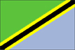
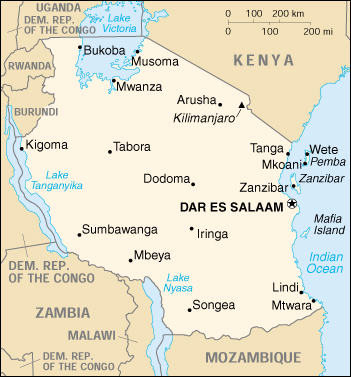

{kind=link}


| Tanzania |  |
|
|  | |
| Introduction |
Background: Shortly after independence, Tanganyika and Zanzibar merged to form the nation of Tanzania in 1964. One-party rule came to an end in 1995 with the first democratic elections held in the country since the 1970s.
| Geography |
Location: Eastern Africa, bordering the Indian Ocean, between Kenya and Mozambique
Geographic coordinates: 6 00 S, 35 00 E
Map references: Africa
Area:
total:
945,087 sq km
land:
886,037 sq km
water:
59,050 sq km
note:
includes the islands of Mafia, Pemba, and Zanzibar
Area - comparative: slightly larger than twice the size of California
Land boundaries:
total:
3,402 km
border countries:
Burundi 451 km, Kenya 769 km, Malawi 475 km, Mozambique 756 km, Rwanda 217 km, Uganda 396 km, Zambia 338 km
Coastline: 1,424 km
Maritime claims:
exclusive economic zone:
200 nm
territorial sea:
12 nm
Climate: varies from tropical along coast to temperate in highlands
Terrain: plains along coast; central plateau; highlands in north, south
Elevation extremes:
lowest point:
Indian Ocean 0 m
highest point:
Kilimanjaro 5,895 m
Natural resources: hydropower, tin, phosphates, iron ore, coal, diamonds, gemstones, gold, natural gas, nickel
Land use:
arable land:
3%
permanent crops:
1%
permanent pastures:
40%
forests and woodland:
38%
other:
18% (1993 est.)
Irrigated land: 1,500 sq km (1993 est.)
Natural hazards: the tsetse fly; flooding on the central plateau during the rainy season; drought
Environment - current issues: soil degradation; deforestation; desertification; destruction of coral reefs threatens marine habitats; recent droughts affected marginal agriculture
Environment - international agreements:
party to:
Biodiversity, Climate Change, Desertification, Endangered Species, Hazardous Wastes, Law of the Sea, Nuclear Test Ban, Ozone Layer Protection
signed, but not ratified:
none of the selected agreements
Geography - note: Kilimanjaro is highest point in Africa
| People |
Population:
35,306,126
note:
estimates for this country explicitly take into account the effects of excess mortality due to AIDS; this can result in lower life expectancy, higher infant mortality and death rates, lower population and growth rates, and changes in the distribution of population by age and sex than would otherwise be expected (July 2000 est.)
Age structure:
0-14 years:
45% (male 7,970,453; female 7,883,442)
15-64 years:
52% (male 9,110,501; female 9,325,726)
65 years and over:
3% (male 463,889; female 552,115) (2000 est.)
Population growth rate: 2.57% (2000 est.)
Birth rate: 40.17 births/1,000 population (2000 est.)
Death rate: 12.88 deaths/1,000 population (2000 est.)
Net migration rate: -1.59 migrant(s)/1,000 population (2000 est.)
Sex ratio:
at birth:
1.03 male(s)/female
under 15 years:
1.01 male(s)/female
15-64 years:
0.98 male(s)/female
65 years and over:
0.84 male(s)/female
total population:
0.99 male(s)/female (2000 est.)
Infant mortality rate: 80.97 deaths/1,000 live births (2000 est.)
Life expectancy at birth:
total population:
52.26 years
male:
51.32 years
female:
53.23 years (2000 est.)
Total fertility rate: 5.51 children born/woman (2000 est.)
Nationality:
noun:
Tanzanian(s)
adjective:
Tanzanian
Ethnic groups: mainland - native African 99% (of which 95% are Bantu consisting of more than 130 tribes), other 1% (consisting of Asian, European, and Arab); Zanzibar - Arab, native African, mixed Arab and native African
Religions: mainland - Christian 45%, Muslim 35%, indigenous beliefs 20%; Zanzibar - more than 99% Muslim
Languages:
Kiswahili or Swahili (official), Kiunguju (name for Swahili in Zanzibar), English (official, primary language of commerce, administration, and higher education), Arabic (widely spoken in Zanzibar), many local languages
note:
Kiswahili (Swahili) is the mother tongue of the Bantu people living in Zanzibar and nearby coastal Tanzania; although Kiswahili is Bantu in structure and origin, its vocabulary draws on a variety of sources, including Arabic and English, and it has become the lingua franca of central and eastern Africa; the first language of most people is one of the local languages
Literacy:
definition:
age 15 and over can read and write Kiswahili (Swahili), English, or Arabic
total population:
67.8%
male:
79.4%
female:
56.8% (1995 est.)
| Government |
Country name:
conventional long form:
United Republic of Tanzania
conventional short form:
Tanzania
former:
United Republic of Tanganyika and Zanzibar
Data code: TZ
Government type: republic
Capital:
Dar es Salaam
note:
some government offices have been transferred to Dodoma, which is planned as the new national capital; the National Assembly now meets there on regular basis
Administrative divisions:
25 regions; Arusha, Dar es Salaam, Dodoma, Iringa, Kigoma, Kilimanjaro, Lindi, Mara, Mbeya, Morogoro, Mtwara, Mwanza, Pemba North, Pemba South, Pwani, Rukwa, Ruvuma, Shinyanga, Singida, Tabora, Tanga, Zanzibar Central/South, Zanzibar North, Zanzibar Urban/West, Ziwa Magharibi
note:
Ziwa Magharibi may have been renamed Kagera
Independence: 26 April 1964; Tanganyika became independent 9 December 1961 (from UK-administered UN trusteeship); Zanzibar became independent 19 December 1963 (from UK); Tanganyika united with Zanzibar 26 April 1964 to form the United Republic of Tanganyika and Zanzibar; renamed United Republic of Tanzania 29 October 1964
National holiday: Union Day, 26 April (1964)
Constitution: 25 April 1977; major revisions October 1984
Legal system: based on English common law; judicial review of legislative acts limited to matters of interpretation; has not accepted compulsory ICJ jurisdiction
Suffrage: 18 years of age; universal
Executive branch:
chief of state:
President Benjamin William MKAPA (since 23 November 1995); Vice President Omar Ali JUMA (since 23 November 1995); note - the president is both chief of state and head of government
head of government:
President Benjamin William MKAPA (since 23 November 1995); Vice President Omar Ali JUMA (since 23 November 1995); note - the president is both chief of state and head of government
note:
Zanzibar elects a president who is head of government for matters internal to Zanzibar; Dr. Salmin AMOUR was elected to that office on 22 October 1995
cabinet:
Cabinet ministers, including the prime minister, are appointed by the president from among the members of the National Assembly
elections:
president and vice president elected on the same ballot by popular vote for five-year terms; election last held 29 October-19 November 1995 (next to be held 29 October 2000); prime minister appointed by the president
election results:
percent of vote - Benjamin William MKAPA 61.8%, Augustine Lyatonga MREMA 27.8%, Ibrahim Haruna LIPUMBA 6.4%, John Momose CHEYO 4%
Legislative branch:
unicameral National Assembly or Bunge (274 seats - 232 elected by popular vote, 37 allocated to women nominated by the president, five to members of the Zanzibar House of Representatives; members serve five-year terms); note - in addition to enacting laws that apply to the entire United Republic of Tanzania, the Assembly enacts laws that apply only to the mainland; Zanzibar has its own House of Representatives to make laws especially for Zanzibar (the Zanzibar House of Representatives has 50 seats, directly elected by universal suffrage to serve five-year terms)
elections:
last held 29 October-19 November 1995 (next to be held NA October 2000)
election results:
National Assembly: percent of vote by party - NA; seats by party - CCM 186, CUF 24, NCCR-Mageuzi 16, CHADEMA 3, UDP 3; Zanzibar House of Representatives: percent of vote by party - NA; seats by party - CCM 26, CUF 24
Judicial branch: Court of Appeal; High Court, judges appointed by the president
Political parties and leaders: Chama Cha Demokrasia na Maendeleo or CHADEMA [Bob MGKANI, chairman]; Chama Cha Mapinduzi or CCM (Revolutionary Party) [Benjamin William MKAPA]; Civic United Front or CUF [Seif Sharif HAMAD]; Democratic Party (unregistered) [Reverend MTIKLA]; National Convention for Construction and Reform or NCCR [Mabere MARANDO]; Tanzania Labor Party or TLP [Augustine Lyatonga MREMA]; Union for Multiparty Democracy or UMD [Abdullah FUNDIKIRA]; United Democratic Party or UDP [John CHEYO]
International organization participation: ACP, AfDB, C, CCC, EADB, ECA, FAO, G- 6, G-77, IAEA, IBRD, ICAO, ICFTU, ICRM, IDA, IFAD, IFC, IFRCS, ILO, IMF, IMO, Inmarsat, Intelsat, Interpol, IOC, IOM, ISO, ITU, MONUC, NAM, OAU, OPCW, SADC, UN, UNCTAD, UNESCO, UNHCR, UNIDO, UPU, WCL, WFTU, WHO, WIPO, WMO, WToO, WTrO
Diplomatic representation in the US:
chief of mission:
Ambassador Mustafa Salim NYANG'ANYI
chancery:
2139 R Street NW, Washington, DC 20008
telephone:
[1] (202) 939-6125
FAX:
[1] (202) 797-7408
Diplomatic representation from the US:
chief of mission:
Ambassador Charles R. STITH
embassy:
285 Toure Drive, Dar es Salaam (temporary location)
mailing address:
P. O. Box 9123, Dar es Salaam
telephone:
[255] (51) 666010 through 666015
FAX:
[255] (51) 666701
Flag description: divided diagonally by a yellow-edged black band from the lower hoist-side corner; the upper triangle (hoist side) is green and the lower triangle is blue
| Economy |
Economy - overview: Tanzania is one of the poorest countries in the world. The economy is heavily dependent on agriculture, which accounts for half of GDP, provides 85% of exports, and employs 90% of the work force. Topography and climatic conditions, however, limit cultivated crops to only 4% of the land area. Industry is mainly limited to processing agricultural products and light consumer goods. The World Bank, the International Monetary Fund, and bilateral donors have provided funds to rehabilitate Tanzania's deteriorated economic infrastructure. Growth in 1991-99 has featured a pickup in industrial production and a substantial increase in output of minerals, led by gold. Natural gas exploration in the Rufiji Delta looks promising and production could start by 2002. Recent banking reforms have helped increase private sector growth and investment. Short-term economic progress also depends on curbing corruption.
GDP: purchasing power parity - $23.3 billion (1999 est.)
GDP - real growth rate: 4% (1999 est.)
GDP - per capita: purchasing power parity - $550 (1999 est.)
GDP - composition by sector:
agriculture:
49%
industry:
17%
services:
34% (1996 est.)
Population below poverty line: 51.1% (1991 est.)
Household income or consumption by percentage share:
lowest 10%:
2.9%
highest 10%:
30.2% (1993)
Inflation rate (consumer prices): 8.8% (1999 est.)
Labor force: 13.495 million
Labor force - by occupation: agriculture 90%, industry and commerce 10% (1995 est.)
Unemployment rate: NA%
Budget:
revenues:
$1 billion
expenditures:
$1.3 billion, including capital expenditures of $NA (1999 est.)
Industries: primarily agricultural processing (sugar, beer, cigarettes, sisal twine), diamond and gold mining, oil refining, shoes, cement, textiles, wood products, fertilizer, salt
Industrial production growth rate: 8.4% (1999 est.)
Electricity - production: 1.7 billion kWh (1998)
Electricity - production by source:
fossil fuel:
29.41%
hydro:
70.59%
nuclear:
0%
other:
0% (1998)
Electricity - consumption: 1.625 billion kWh (1998)
Electricity - exports: 0 kWh (1998)
Electricity - imports: 44 million kWh (1998)
Agriculture - products: coffee, sisal, tea, cotton, pyrethrum (insecticide made from chrysanthemums), cashew nuts, tobacco, cloves (Zanzibar), corn, wheat, cassava (tapioca), bananas, fruits, vegetables; cattle, sheep, goats
Exports: $828 million (f.o.b., 1999 est.)
Exports - commodities: coffee, manufactured goods, cotton, cashew nuts, minerals, tobacco, sisal (1996)
Exports - partners: India 9.8%, Germany 8.9%, Japan 7.8%, Malaysia 6.5%, Rwanda 5.2%, Netherlands 4.7% (1997)
Imports: $1.44 billion (f.o.b., 1999 est.)
Imports - commodities: consumer goods, machinery and transportation equipment, industrial raw materials, crude oil
Imports - partners: South Africa 12.9%, Kenya 9.6%, UK 8.7%, Saudi Arabia 6.6%, Japan 4.9%, China 4.6% (1997)
Debt - external: $7.7 billion (1999 est.)
Economic aid - recipient: $963 million (1997)
Currency: 1 Tanzanian shilling (TSh) = 100 cents
Exchange rates: Tanzanian shillings (TSh) per US$1 - 798.90 (January 2000), 744.76 (1999), 664.67 (1998), 612.12 (1997), 579.98 (1996), 574.76 (1995)
Fiscal year: 1 July - 30 June
| Communications |
Telephones - main lines in use: 127,000 (1998)
Telephones - mobile cellular: 30,000 (1999)
Telephone system:
fair system operating below capacity and being modernized for better service; VSAT (very small aperature terminal) system under construction
domestic:
trunk service provided by open wire, microwave radio relay, tropospheric scatter, and fiber-optic cable; some links being made digital
international:
satellite earth stations - 2 Intelsat (1 Indian Ocean and 1 Atlantic Ocean)
Radio broadcast stations: AM 12, FM 11, shortwave 2 (1998)
Radios: 8.8 million (1997)
Television broadcast stations: 3 (1999)
Televisions: 103,000 (1997)
Internet Service Providers (ISPs): 7 (1999)
| Transportation |
Railways:
total:
3,569 km (1995)
narrow gauge:
2,600 km 1.000-m gauge; 969 km 1.067-m gauge
note:
the Tanzania-Zambia Railway Authority (TAZARA), which operates 1,860 km of 1.067-m narrow gauge track between Dar es Salaam and Kapiri Mposhi in Zambia (of which 969 km are in Tanzania and 891 km are in Zambia) is not a part of Tanzania Railways Corporation; because of the difference in gauge, this system does not connect to Tanzania Railways
Highways:
total:
88,200 km
paved:
3,704 km
unpaved:
84,496 km (1996 est.)
Waterways: Lake Tanganyika, Lake Victoria, Lake Nyasa
Pipelines: crude oil 982 km
Ports and harbors: Bukoba, Dar es Salaam, Kigoma, Kilwa Masoko, Lindi, Mtwara, Mwanza, Pangani, Tanga, Wete, Zanzibar
Merchant marine:
total:
7 ships (1,000 GRT or over) totaling 20,618 GRT/26,321 DWT
ships by type:
cargo 2, passenger/cargo 2, petroleum tanker 2, roll-on/roll-off 1 (1999 est.)
Airports: 129 (1999 est.)
Airports - with paved runways:
total:
11
over 3,047 m:
2
2,438 to 3,047 m:
2
1,524 to 2,437 m:
5
914 to 1,523 m:
1
under 914 m:
1 (1999 est.)
Airports - with unpaved runways:
total:
118
1,524 to 2,437 m:
18
914 to 1,523 m:
65
under 914 m:
35 (1999 est.)
| Military |
Military branches: Tanzanian People's Defense Force or TPDF (includes Army, Navy, and Air Force), paramilitary Police Field Force Unit, Militia
Military manpower - availability:
males age 15-49:
8,104,226 (2000 est.)
Military manpower - fit for military service:
males age 15-49:
4,690,681 (2000 est.)
Military expenditures - dollar figure: $21 million (FY98/99)
Military expenditures - percent of GDP: 0.2% (FY98/99)
| Transnational Issues |
Disputes - international: dispute with Malawi over the boundary in Lake Nyasa (Lake Malawi)
Illicit drugs: growing role in transshipment of Southwest and Southeast Asian heroin and South American cocaine destined for European and US markets and of South Asian methaqualone bound for Southern Africa